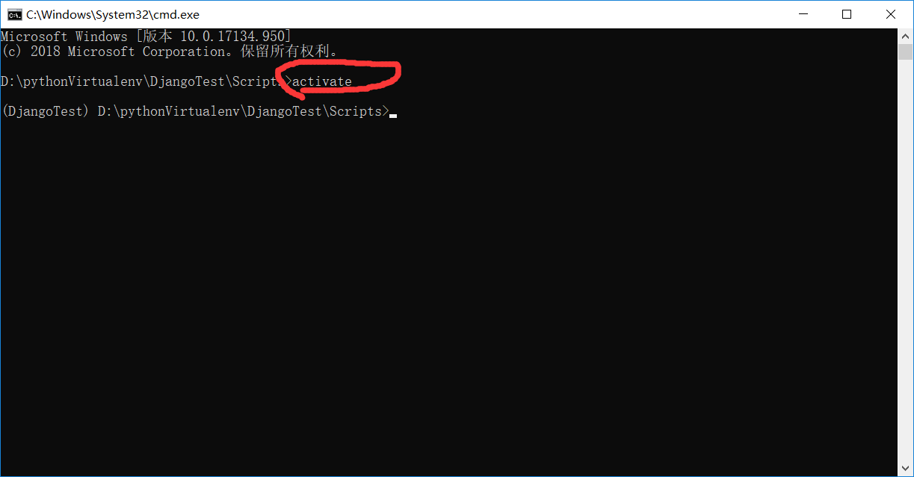
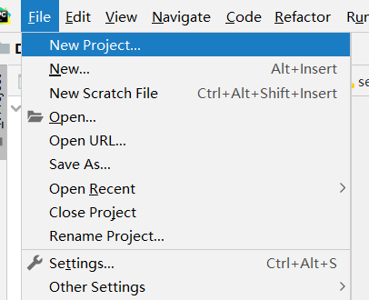
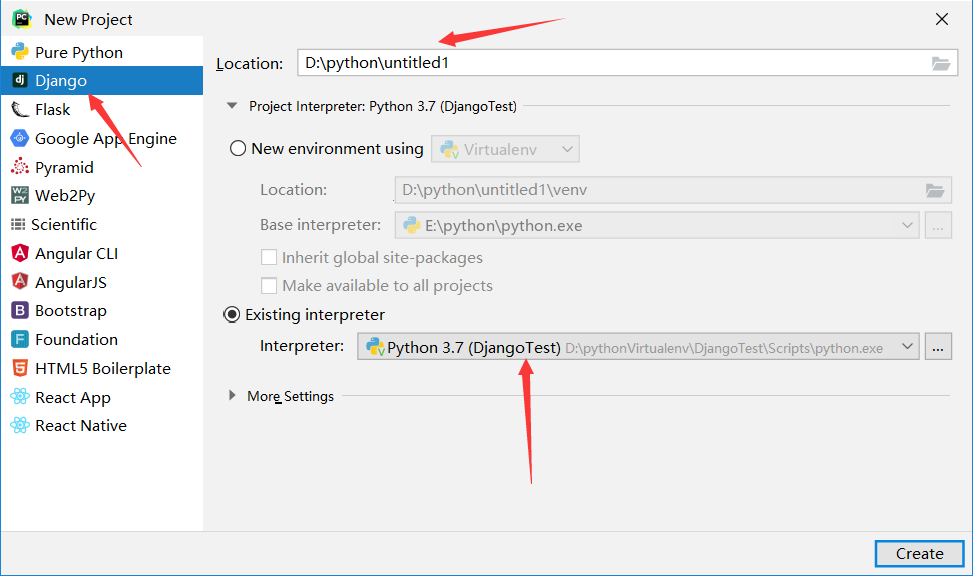
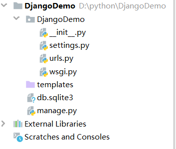
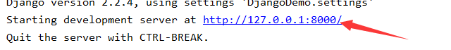
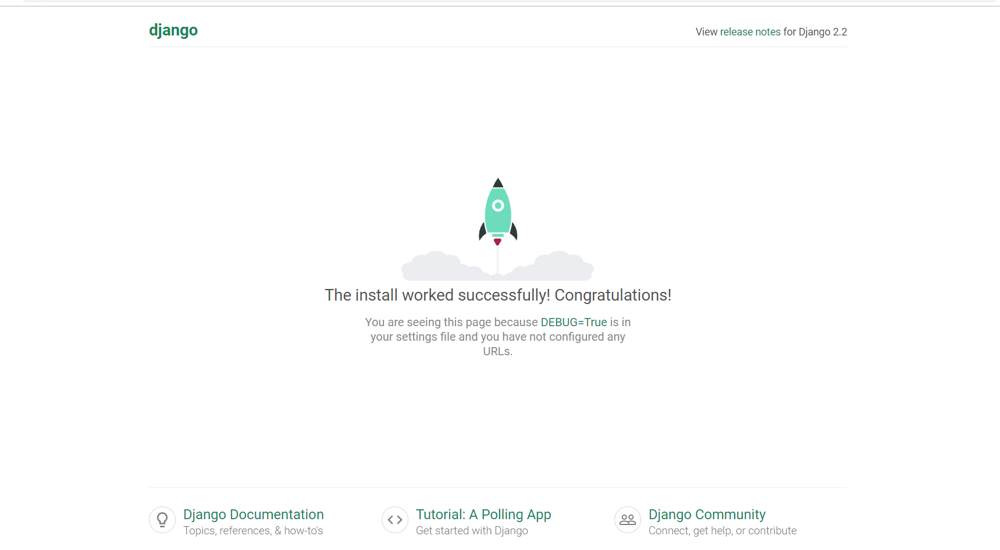

首先下载PyCharm专业版
破解地址:https://www.52pojie.cn/thread-997094-1-1.html
之后创建python虚拟环境(创建虚拟环境在上一篇博客)
激活虚拟环境

之后打开PyCharm专业版创建新项目

点击Django模板,选择文件目录,选择我们自己创建的虚拟环境,虚拟环境一定要在激活的状态下!

之后点击Create,就创建完成了.
创建完成后项目目录如下

点击菜单栏中的run,跑一下项目,之后单机控制台的url路径

会自动打开一个网页,网页效果图如下:

如果到了这一步,那么恭喜你,你已经成功搭建出来了Django项目框架
本人原创,仅供学习!